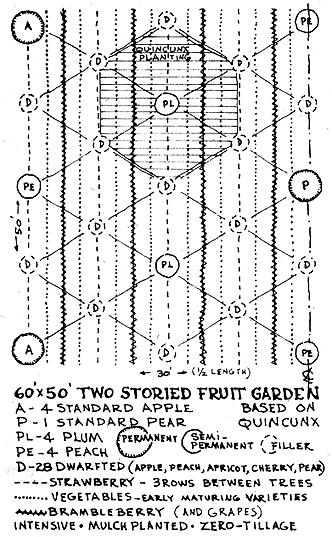
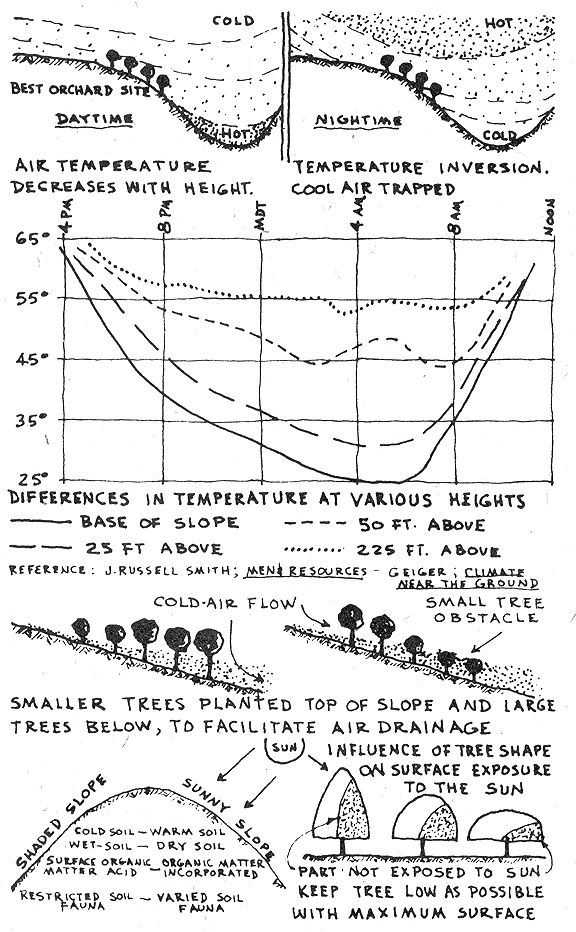
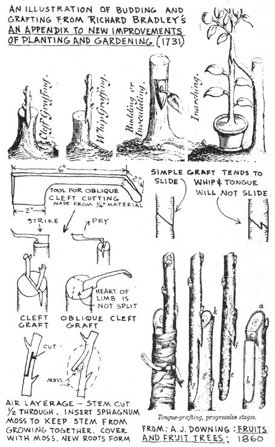
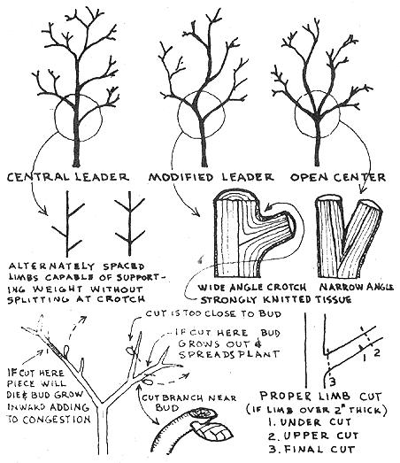

Trees full of soft foliage; blossoms fresh with spring beauty; and, finally-fruit, rich, bloom-dusted, melting, and luscious-such are the treasures of the orchard and the garden, temptingly offered to every landholder in this bright and sunny, though temperate climate. A.J. Downing 1845 Whenever the subject of Homestead Orchard is discussed, two things flash to mind: First, I am reminded of the many agricultural Titans who have devoted major segments of their lives to the furtherance of tree crops.
There are hard-working devotees in every field of plant and animal husbandry . . . but pomologists appear somewhat different. They seem to be a more dedicated and intense breed . . . to them tree crops offer philosophical substance as well as taste and nutrition. Professor John Gifford was one of these Titans who saw social and economic implications in tree crops. In 1934 he wrote a small book on diversified tree crop farming for the tropical homestead.
In it he showed how annual crops are unsuitable to tropical climates, where deep-rooted trees thrive. The Mayans failed to survive because they planted corn and cut down forests. For the most part tree-men consider corn the killer of continents, and regard corn as one of the worst enemies of the human future. Annuals are the crop of primitive man . . . food needed in a hurry, Promethean man supposedly has the culture and the leisure and intelligence to subsist on tree crops! This is my favorite passage from Gifford's book:
The furtherance of the tropical forest subsistence homestead has been and 1 hope always will be uppermost in my mind. For 40 years my life has been shaping itself to this very end because it seems to me about the most essential thing that can give life and comfort to the majority of our people, in fact, the only permanent way out of the difficulties which beset the world.
The small farm home is the essential basic unit of society. The prosperity and strength of any country can be measured by the number of small self-supporting homesteads which it contains. The best nations of the world are not those with the greatest natural resources but with the largest number of small, self-supportive, free-of-debt homesites.
THE TROPICAL SUBSISTENCE HOMESTEAD. The second thing that comes to mind in a tree crop discussion is disheartening: A tremendous knowledge of tree crops has been amassed by many at great cost in time and energy . . . but is virtually unknown or unaccepted by contemporary farmers. There is no better example of this unfortunate situation than exists in a review of the life work of J. Russell Smith, tree-man par excellence. Smith launched his study of commercially useless trees in 1910, with a worldwide quest for new varieties. In 1929 he published TREE CROPS-A PERMANENT AGRICULTURE.
His valuable tree discoveries were then intensified with more worldwide travel followed by a revised edition of his book in 1954. As a loyal tree-man, Smith (who, incidentally was professor of economic geography at Columbia University) spoke vehemently against annual row crops. Crops that must build themselves from scratch for each harvest are victims of the climatic uncertainty of short seasons. Tree crops, on the other hand, are not affected by drought to the same degree . . . deep roots enable a tree to accumulate and store moisture. Smith was repulsed by the fact that four-fifths of everything raised by the American farmer goes to feed animals.
He made a good case for a tree crop diet instead, realizing that meat contains 800 calories as compared to nuts which contain 3,200 calories. If animals are to be raised, Smith maintained that they should be allowed to harvest their own crops. This "hogging down" principle is nowadays a major agricultural innovation . . . as when hogs are permitted to harvest corn, soybeans, peanuts, etc. Smith maintained that tree crops can also be harvested directly by animals . . . mulberry, persimmon, oak, chestnut, honey locust, and carob are all excellent stock-food trees. Andrew Jackson Downing continues to be the tree-crop giant of them all.
One of his major works, FRUITS AND FRUIT TREES OF AMERICA, published in 1845, remains today an essential tree crop reference. Resulting from the publication of a number of his important books, Downing's influence on American fruit tree culture is apparent to this day. He fully remodeled western European fruit growing practices to fit American site and climatic conditions. One contemporary tree crop author found that fruit trees planted in Massachusetts and Michigan during the height of Downing's influence (18701890) are still standing and bearing fruit. Yet thousands of trees planted in subsequent years (1890-1920) have broken down or died. There is a refreshing simplicity in Downing's basic principles:
A judicious pruning to modify the form of our standard trees is nearly all that is required in ordinary practice. Every fruit tree, grown in the open orchard or garden as a common standard, should be allowed to take its natural form, the whole efforts of the pruner going no further than to take out all weak and crowded branches.
The tree-men who have qualified the science of pomology are in unanimous agreement on one important aspect: interplanting is a desirable practice.
Interplanting makes good sense to the homesteader from a purely economic standpoint. Where peaches, pears and plums are interplanted in apple orchards, revenue from their yields subsidize the apples to production. Rapidly maturing 'tree crops (like dwarfed varieties) can be alternated with slowly maturing species. Mulberry trees are an excellent choice to interplant in a nut tree orchard . . . they grow rapidly, bear young and are resistant to shade. One type of interplanting is known as "two-story agriculture". Here, trees are grown on land that is cropped or pastured for mutual benefit.
There has already been some discussion (see MOTHER N0. 17) of how sod crops benefit by the companionship of tree crops. About 10 black walnut trees in an acre of permanent pasture improves the pasture considerably.
The deep roots and thin open foliage characteristic of walnut trees do not interfere with a lower-story sod crop. The leaf-filtered, sunlight makes it possible for a sod crop to continue growth throughout summer months. Walnut trees give grass more time to get established before the summer warm season, because their growth is primarily in the late spring. There are numerous advantages in planting a two-story fruit and vegetable garden.
Fruit trees bear in the upper story while brambles, grapes, bush fruit, or vegetables grow below. Long-lived fruit trees continue to bear when short-lived lower-story plants are removed. "Filler" trees are located between standard varieties, to provide early bearing an short-lived fruit. Dwarfed trees can be used as fillers in a standard bearing orchard.
They can be chosen as early bearing varieties of the same fruit, as when a wealthy apple is set between a northern spy or McIntosh apple.
In terms of intensive gardening, planting trees in "square" patterns is wasteful of space. When a tree is planted in the center of each square (creating a quincunx arrangement), nearly twice as many trees can be located in the same area.
The gardening program for an intensively planted, heavily mulched 60 by 50-foot plot might be as follows: Vegetables and ever-bearing strawberries harvested the first season, a partial crop of brambleberries harvested from the second to tenth year, and then removed; from the third to the tenth year dwarfed fruit varieties bear, then removed to allow more room for semi-permanent trees; peaches and plums produce until the fifteenth year,
then removed to allow maximum space for the remaining four apples and pear-with appropiate sod crop-which continue to bear indefinitely.
There are a number of conditions that influence the choice of a sod crop in an orchard. The ideal sod crop is one which grows slowly at first, when trees need the ground moisture, and more rapidly later in the season when trees require less moisture. Soybeans and cowpeas have this quality. Alfalfa and small grains are poor choices because their extensive root systems may rob the tree of moisture.
Leguminous sod crops-such as hairy vetch-are especially valuable for maintaining soil fertility in a nut tree orchard. Tree crops planted in a heavy and poorly drained soil will benefit from a lower-story permanent sod crop such as bluegrass or orchard grass (orchard grass is aptly named!).
Grass roots help to use up soil moisture and increase the size of air-filled pores and fractures. Aeration is thus improved, and if cultivation can be avoided, the tree's surface root growth will be encouraged at the one place where aeration is best attained . . . the surface. Plowing, discing, rototilling, and cultivating around trees is a ghastly practice, to be avoided at all costs: A homesteader should realize that the greater majority of all feeder roots are located within one foot of the surface.
This is the zone where the soil is most fertile and where aeration is greatest. Mulch planting is a much preferred practice.
Besides nutrient and moisture conservation, mulch gives excellent protection against winter root damage. Tests at the University of Kansas show freezing soil penetration to 26 inches on bare ground; snow cover reduces this danger area to 12 inches; straw mulch plus the snow coverage reduces it even more . . . to 6 inches. A mulch cover tends to retard spring blossoming . .
. which can be a desirable feature in areas where late frosts present a danger (as in eastern Oregon, where it may freeze any time during the growing season). Another protection against early blossoming is to plant on the north slope. The accompanying diagram illustrates how this retardation principle operates.
Some tree crops, like apricot, plum, sweet cherry, and almond naturally blossom early; some apple varieties like Rome beauty and northern spy blossom late.
As a general rule the blossoming of fruit begins early in the south and moves north at about five days for each degree of latitude. Altitude will influence these figures somewhat.
Charts showing "average date of last killing frost" should not be entirely adhered to, because average means that 50% of the frost occurs before and 50% after the specified date.
The odds are just too great to follow. An injurious winter temperature can also be influenced by a water-tempering effect. There is more danger of winter injury to tree crops in the Mississippi Valley (latitude 38 degrees)
than in Nova Scotia (latitude 45 degrees). An orchard planted on the leeward shore (usually south or east) of water gains significant temperature advantage. This assumes, of course, that the water remains unfrozen .
. . no protection is offered from frozen water. Water-filled soil supplies more latent heat on a frosty night than dry soil. An ideal tree crop site is one that lies higher than surrounding land. Trees planted in a natural draw receive cold air drainage.
Even on a gradual slope, when cold air drainage meets a tree crop obstacle, it may engulf it and cause frost damage. Air drainage can be facilitated by correct planting practice, as accompanying sketches depict.
Trees planted on the contour or in rows across a slope may also impede essential air drainage. Wind protection is an essential consideration in any homestead tree crop program. A following chapter will give ample consideration to windbreak planning.
Mainly, the fact that winds are usually accompanied by heavy ground-saturating rains make trees vulnerable to toppling over.
There are various reasons for choosing dwarf varieties of fruit trees in preference to standard varieties. For one thing, site and climate problems can be tolerated better with dwarf varieties.
The ground-hugging feature of closely planted dwarf trees permits them to receive more warming radiation from ground heat. There is a type of "creeper" dwarf apple tree that grows as far north as Siberia.
Having little height it can stand the cold better and be protected in the wintertime by a snow cover. Other considerations for tree choice besides site and climate should be mentioned: hardiness is certainly one. A tree that is hardy in its environ ment is certainly more resistant to disease.
In California, for instance, English walnut trees are customarily gafted onto black walnut root stock. As a result of long years of experience it was found that black walnut roots are less susceptible to fungus attack and survive California temperature extremes better.
Rootstock grafting is also done to attain a deeper root system . . . a valuable consideration in areas of limited irrigation or rainfall.
Proper tree choice is also essential in moisture-scarce regions. Cherries, gapes and olives require less moisture than oranges, apples and pears.
In Tunisia, olive trees are planted as much as 100 feet apart in order to gain the extra moisture advantage that comes with increased spacing. Commercial, monoculture orchards are invariably overcrowded, overtilled, overfertilized, overpruned, and of course, overdiseased.
But to be commercially "economic" a money-based orchard could hardly be operated otherwise! Tree crop food production is one area where a homesteader can maintain major advantages over the commercial farmer. The homesteader can engage in all the "uneconomic" practices, like two-story, intercropped, mulch-planted varieties, and produce better tasting, nutritious, disease-free crops.
To remain competitive, a commercial orchardist must stimulate large-and-early, colorful crops. Of the numerous shot-in-the-arm methods for attaining these ends, fertilization is probably the most used . . . and misused. Darwin was one of the first to point out the dangers of fertilization.
In his VARIATIONS OF ANIMALS AND PLANTS UNDER DOMESTICA TION he quotes Gartner in the statement that sterility from soil fertilization is especially common with cereals, cabbage, peas and beans. The concentration of salts found in farmyard manure as well as chemical fertilizer will
destroy tender feeder roots. Many newly planted trees die because the grower was too eager to "give the tree a good start" by filling massive amounts of fertilizer around the root zone. A mixture of damp peat moss and loamy soil around newly planted roots would be better than fertilizer in any form.
Also, the planting hole should not be water-saturated as the tree is planted. Moisten the soil after the tree is planted, to prevent the formation of clods and to facilitate tamping.
Fall planting is considered best for tree crops. However, where severe winters prevail, spring planting is preferred.
With a fall-planted tree, some root growth will take place through the winter months if the tree is heavily mulched. Be sure to direct the newly planted tree slightly into the prevailing wind. This encourages root development on the windward side, as the most vigorous branch always lies directly over the most vigorous root.
Dioecious trees-those having male and female organs borne by different individuals-should be grown as; one would raise a herd of animals . . . one male tree (staminate) planted with a group of female trees (pistillate). Commercial nurseries charge exorbitant prices for grafted tree stock.
Traffic bears this cost mostly because of the mystique associated with "grafting". Actually, as tree-crop writers like Downing point out, grafting is a simple, basic skill that can be mastered by anyone who takes the trouble to understand a few basic principles.
First, the seedling must be raised. Smith describes one interesting method: four plaster laths are nailed together to form a tube of earth one inch square and three feet long.
The seed is placed near the surface of this tube, and as the plant grows, roots cling to one lath previously soaked in a nitrate of soda solution.
The four-inch-high seedling with three feet of roots can thus be planted deep into the ground using nothing more than a crowbar to prepare the hole.
Before germination is possible, some seed (notably nut trees) must undergo a certain amount of freezing. The tree raised from seed is not apt to develop true to the character of the tree it came from. For this reason a scion-or branch of the producing tree-is grafted onto the root stock.
Both scion and stock should be about the same diameter, about 1/2 inch. Grafting should be done early in the spring so that the wound will not be exposed long before growth resumes. Budding and layering are other methods of multiplying the progeny of an especially desirable tree.
In layering, a part of the parent plant is induced to grow roots or shoots before separation from the plant. All of these grafting processes (grafting is the healing in common of two wounds) are best accomplished by the homesteader on trees and seedlings already planted in their final location on the homestead.
Even dwarf fruit varieties can be started in this manner. A dwarfed tree is nothing more than a stronggrowing scion grafted onto a weak-growing root stock.
A quince rootstock will dwarf a pear scion; but a pear that is thus grafted on a quince root will tend to grow larger and faster than the quince tree. The weak-growing quince rootstock takes a little from the soil and requires small amounts of carbohydrates for growth, whereas the standard-size scion will accumulate carbohydrate at the cost of protein assimilation. The high proportion of carbohydrates to protein results in dwarfing and early fruitation. The northern spy dwarf apple bears in 4 years as against 15 years for standard varieties.
Apple, pear, cherry, peach, plum and apricot trees can all be successfully dwarfed, and they all certainly have a place on the homestead. As mentioned earlier, due to their low profile, dwarf "creeper" apple trees can be grown in a Siberian weather zone. In general, a low, spreading tree form should be encouraged . . . it maintains maximum sun exposure and offers least resistance to wind. Shade over the immediate soil area helps to conserve soil moisture.
Some tree experts even claim that a low-growing tree offers less drain on soil fertility. The greatest vigor in a tree is located near its top, so by pruning the top this vigor is spread to other parts of the tree.
Of pruning, someone once said: "There is no horticultural practice concerning which there is a greater diversity of opinion or in the application of which there is a greater diversity of procedure." According to the Illinois Experimentation Station (Bulletin 376) pruning contributes to the death of more trees mistakenly attributed to "mishandling" than to any other single factor.
The main purpose of pruning is to remove injured and diseased growth. Without the protective outer cover that bark offers, dead limbs are attractive to parasites and saprophytic fungi.
Another equally purposeful reason for pruning is to train the young tree structurally . . . so it might better resist wind, snow and ice damage at a later, more mature stage. The "central leader" and "modified leader" patterns are in common usage, along with the somewhat less popular "open center" pattern. An open center tree has a structural defect, but does receive more interior sunlight.
As the tree matures, so too does the purpose of pruning. On a mature tree one finally limits pruning activities to maintaining a balance between vegetation and fruiting, and between the root system and the vegetation system . . . mostly by thinning out top growth. When transplanting, top growth should be removed to balance the remaining root system.
Downing recommends summer pruning in preference to winter pruning, as wounds heal more rapidly while the tree remains in active growth. The old adage that advises pruning during the dormant period, "when the sap is down", is rather foolish, as wood is just as sap-laden in winter as it is in spring. In spring, mineral saturated water from the soil travels upward through sapwood to the leaves. In the leaf the water is converted into starches and sugars and then travels downward through the inner bark, feeding the tree en route.
With practice and clear advice grafting can soon become one of the rewarding "fun things" that one can do on the homestead. The art of plant propagation is never really learned or mastered . . . but at the outset one receives a satisfaction that comes from cooperation with plant growth processes.
Super-trained tree specimens-like espalier-can be created, not without great patience and skill. Or exotic conversation pieces can be displayed . . . as with the five-variety apple tree or tomato-producing potato plant. Some have even chosen to deal in an illicit grafting practice . . . one that in current legal cases has even jurisprudence bemuddled: a hop (Humulus lupulus) scion grafted onto a marijuana (Cannabis sativa) rootstock will produce a hop leaf suitable for psychedelic usage. Peace.
|
 |
 |
 |
|
 |
|
|